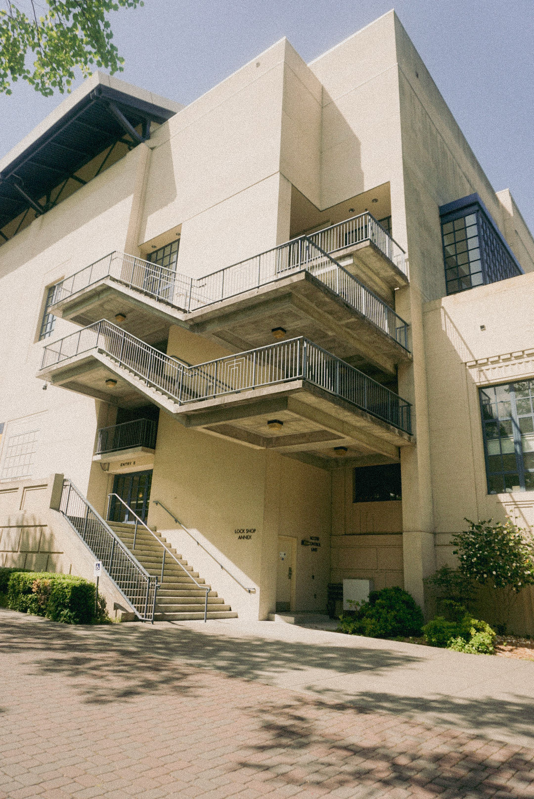

a homage to my time as an undergraduate in this city. i gave the photos a "film" look to express my sense of nostalgia.
most of these were taken during a photowalk i did at the end of my senior year around graduation. i think it's interesting how i often try to encapsulate
the beauty in things when i know they're ending, like how these photos were a last attempt for me to remember that i had a place here before i left.
isn't it weird how we take for granted the beauty in the things around us until they seem to slip through our fingers?
